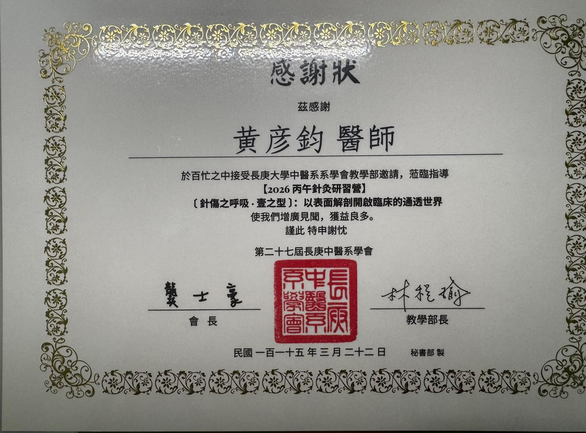
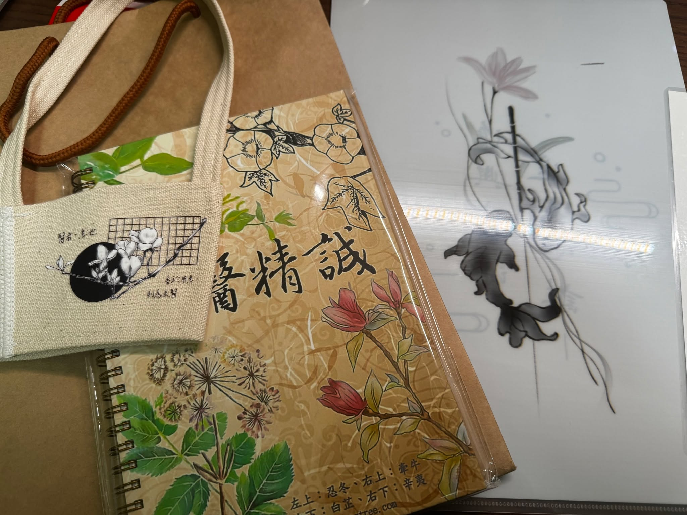
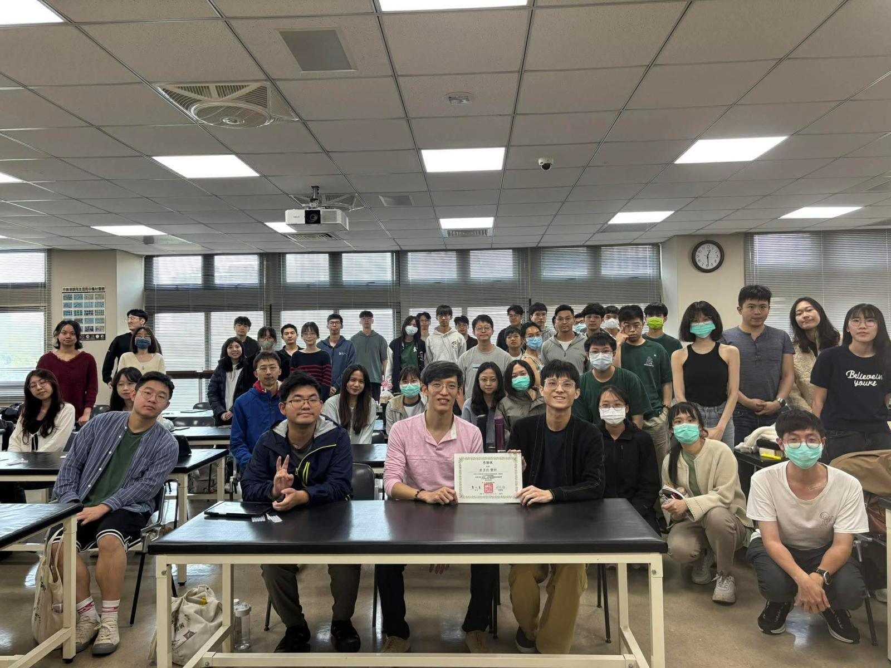
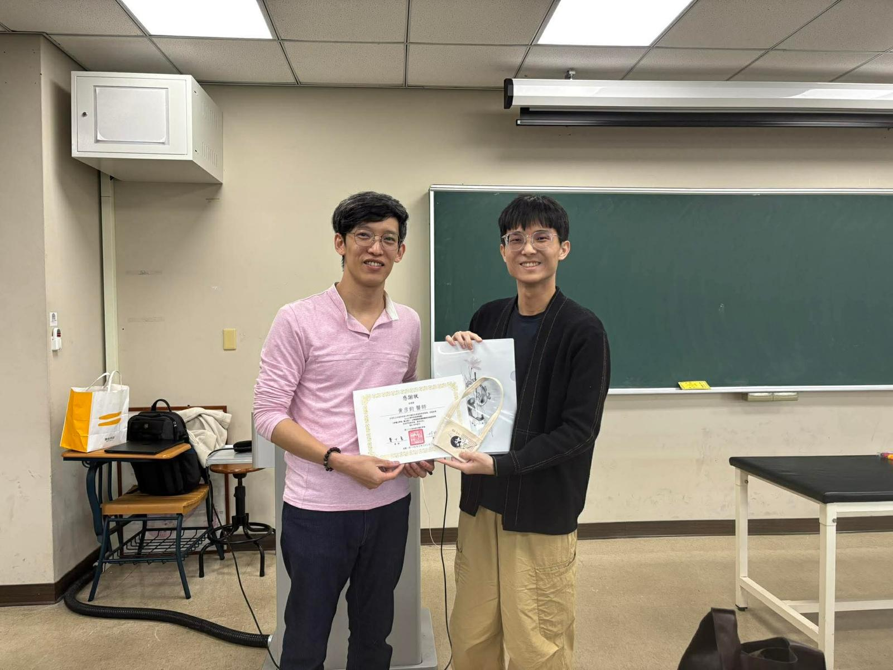
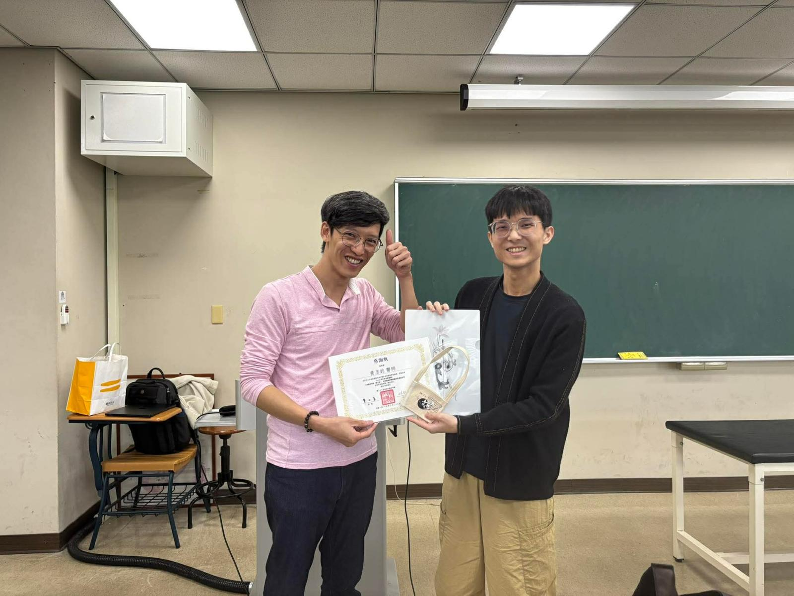

今天，我踏進了長庚大學中醫系的針傷教室，完成了一個自我的小小里程碑。
今天，我踏進了長庚大學中醫系的針傷教室，完成了一個自我的小小里程碑。
對於一位單修中醫的後中醫師來說，來到雙主修（中醫與西醫雙修）的主場，無疑是一場極具意義的交流。大約三個店面寬的教室裡，幾乎坐滿了將近 50 位聽眾。從大一到大七的醫學生，甚至還有已經在執業的醫師們，大家都為了一個純粹的目標齊聚一堂。
特別感謝 林程瑜 部長的邀請，讓我能有機會與大家分享這個在臨床上至關重要、卻常在體制養成中被輕忽的基礎能力——表面解剖與觸診。
👐 從圖譜到臨床：被忽略的基礎能力
在醫學養成的過程中，我們背誦過無數的解剖圖譜與神經走向。但在真實的臨床現場，面對一個有溫度、有厚度的人體，如何透過雙手，精準摸出每一塊骨骼的相對位置、辨識出每一條肌肉的走向與張力，卻往往是訓練中最容易出現斷層的環節。
沒有精準的觸診與定位，再華麗的針法或徒手技巧都會失去準星。
看著台下同學們對於「把骨頭與肌肉摸清楚」這件事展現出高度的熱忱與專注，我清楚知道，這正是通往精準治療最關鍵的敲門磚。讓參與者親自實作，體會到從「知道」到「做到」仍有一段距離，親自動手，才會知道把知識落實原來是一件不簡單的技能。
🌉 共通語言：促進醫療間的互信與合作
台下的年輕學子們，擁有著扎實的雙主修背景，許多人或許還站在未來要走純西醫或純中醫的十字路口。
即便多數人可能最後都選擇走西醫，但我仍期盼透過這次三個小時的演講與實作，能向這群未來的醫療棟樑傳遞一個訊息：現代的中醫師，是可以非常多元開闊、且務實踏實的。
當我們能夠放下門戶之見，用共通的解剖力學語言、客觀的理學評估來對話與治療時，中西醫之間的界線將不再是阻礙。專業醫療間的互信與跨領域合作，也能真正落在實處，為患者帶來最大的福祉。
👨⚕️ 站上講台的初心
隨著臨床經驗的累積，將實務經驗轉化為教學能量，一直是我非常想完成的目標之一。
這次能再次踏入校園，沉浸在單純、清新的學習氛圍中，是一段非常美好的經歷。看著這群眼神發亮、單純渴望吸收新知的年輕醫學生，彷彿也讓自己重新充飽了電，跟著年輕了起來！
期許大家都能帶著這份扎實的基礎，在未來的行醫之路上，穩健前行。
#表面解剖 #長庚中醫 #觸診技巧 #醫學教育 #中西醫結合 #徒手治療 #中醫徒手 #中醫傷科 #現代中醫 #跨領域合作
太初中醫診所 東門中醫
中醫師 黃彥鈞
拾初




